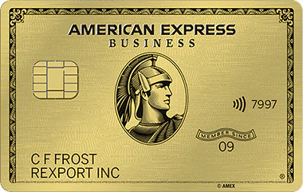

Get Started with one of these popular categories.
Find the right one.
American Express
Chase
Cash Back
News of the Day
Limited time offer

Earn 35,000 70,000 Membership Rewards points with the American Express Business Gold Card